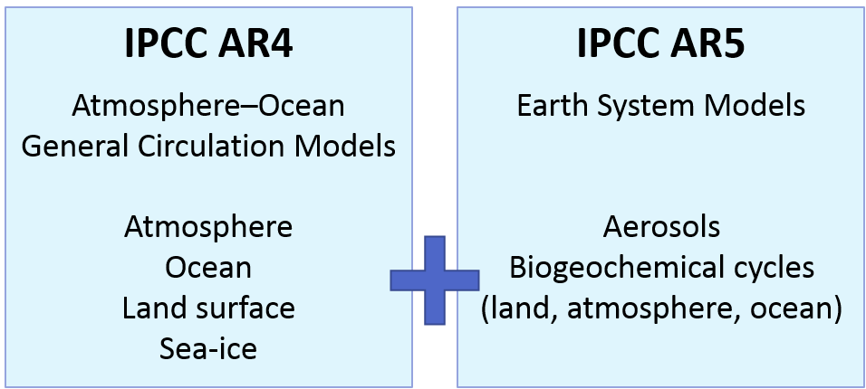

What is SpaDES?
Eliot McIntire, Ceres Barros, Tati Micheletti, Alex Chubaty
January 2021
Source:vignettes/01a-WhatIsSpades_Jan2021.Rmd
01a-WhatIsSpades_Jan2021.Rmd
What is SpaDES and how does it work?
Models are nowadays so important and widespread that we often don’t realize that most of what we use in our daily lives is the result of someone’s (or some team’s) model. From weather forecasting, to predicting stock market fluctuations. From the design of your bike, to the estimation of blood sugar and insulin levels and how they vary hourly and according to different diets (in case you don’t know, this can be important for diabetes treatments, and drug dosage and scheduling)… Models are indeed ‘everywhere’.
So models are a representation of reality and are extremely useful because they help us predict the future. This means that they should also be constantly improveed and updated, so that our predictions are always as good as possible. This is especially important in a world where decision and policy makers need to act fast. The IPCC has been especially good at doing this. But unfortunately most of us, our teams and/or our projects do not have access to the resources that the IPCC has.
Challenges modellers face
In a world where disciplines often interact to study complex questions, like climate change, natural resource management, or even where to build an offshore wind farm, modellers (and model users!) face challenges that can impair scientific and social progress:
-
Many models, low integration
- different scientific teams/individuals develop models to investigate the same question - which to choose?
- these models sometimes vary in their degree of complexity - when is one more appropriate than the other?
- and are often written in different programming languages, sometimes making their comparison, integration and development harder (especially for those who are not the model authors!)

-
High complexity
- often solving a question, or problem, requires the cooperation of different teams, each contributing with distinct data and, possibly, models that need to be integrated;
-
Era of big data
- data availability and volume are increasing FAST;
- today’s model, will be outdated tomorrow -> models need to be constantly updated, revised and re-validated and re-calibrated.

-
Reproducibility and transparency
- one of the first premisses of scientific method is to repeat analyses and verify whether hypotheses hold in different conditions -> science must be reproducible in order to progress;
- models (and modellers!) should be open to change and adaptation;
- results and conclusions must be shared with stakeholders, managers, policy makers and the general public.
How do we tackle these issues? -> the PERFICT approach
Tackling these issues will require that our ecological (and other) models are PERFICT; they need to be Reusable, Freely available, and built on Interoperable models that are part of a Continuous workflow and Tested automatically. This goes beyond transparency, reproducibility and data availability. All of these are necessary to develop reusable and interoperable models that are durable and useful.
Unfortunately, these principles are only seldomly applied across the scientific community.
Why? Because we are yet far from developing our research in a way that is easily repeatable, “upgradeable” and shareable. This renders the application of the continuous adaptive management framework costly, both temporally and financially, especially in interdisciplinary projects that involve multiple teams and stakeholders. It also requires a relatively high level of programming skills to implement such a framework.
Being PERFICT with SpaDES!
SpaDES - Spatial Discrete Event System - is a framework for weaving together workflows that are focused around data and models. It is a meta-package on CRAN that is simply a collection of R packages. You can install just the individual packages or the whole collection.
What are some of the day to day things an ecologist does?
-
Data - work with it
- download data
- clean data
- transform data
-
Models - analyze data through models
- spatial
- statistical
- mathematical
-
Prediction – Ecological forecasters add a few more to this
- predict from models
- build and use simulation models
-
Interact with specialists and non-specialists
- Write papers
- Make figures
- Create and use web apps
To be reproducible, each of these steps can be written into 1 or more scripts –> GOOD!
This will be useful (though still challenging!) to get exactly the same results from the same starting point.
What if you want to move to a new study area?
We can build functions and collect them into packages –> GOOD!
But, this approach hits a limit –> how can another person (including yourself) reuse one piece of that?
But, we still are stuck as things start to get more complicated:

The next frontier is reusability
We not only want to use your building blocks, but we might want to take your actual analysis steps. Have we ever stared at a publications with an equation written down and we say, why can’t I just get the code that does this?
SpaDES aims to provide modellers and non-modellers across different domains of life and earth sciences (and beyond!) with a tool that they can control, apply and develop.
How?
1. SpaDES is written in R: a widely understood programming language, highly suited to statistical analyses, but flexible and fast enough to accommodate simulation work;
2. SpaDES can be used for a wide-range of modelling approaches: + process-based models; + phenomenological models; + spatially-explicit models; + … 3. SpaDES models are built of modules, i.e. self-contained, interacting pieces that execute a particular event, or process in the model. Modules communicate via data-flow and module events are scheduled automatically across temporal scales. Finally, SpaDES offers several functions to enable direct connections between modules and data sources and facilitate data downloading, munging and caching operations. 4. SpaDES modules can be made available across the entire R community if module-developers wish it so;
In its whole, SpaDES bridges the gaps between modellers and model-users of different disciplines, between scientists, practitioners, managers, stakeholders and policy makers, and between scientists and the general public.
SpaDES is more than a simulation platform
There are other platforms that are well suited to build simulation models, such as NetLogo, which is dedicated to building Individual Based Models, SELES and many more. These are generic platforms that can accommodate a lot of science creativity – often the focus is on model development.
There are other platforms that are will suited for using pre-existing simulation models, such as Landis. These are very effective at stand alone forecasting – the work of the user is focused on parameterization, rather than model development.
SpaDES is a platform than can accommodate all of these, because it is focused about “doing anything you want with data”. This flexibility can come with a price: if we can do anything, do we have to learn how to do everything?

An example
Imagine we want to know how logging will impact caribou populations. We could model this with have a predictive landscape model of caribou movement and abundances, which is linked to a landscape vegetation module, which is in turn coupled to a harvesting module. The caribou module would have events like calving and movement, the vegetation module would simulate vegetation growth and recruitment, and the harvesting module would simulate logging events that would only can happen at certain moments in time, when the forest is “ready”. The communication between the modules would be made with data “objects”. For instance, the vegetation module feeds the caribou module with lichen abundance, and the caribou module then feeds back by consuming lichen. The vegetation module also informs the harvesting module of stand age, while the harvesting module removes a certain amount of trees from the system. As developers we would inform SpaDES of when to schedule these events, and SpaDES would do it automatically by converting all time units to a common denominator, seconds. So even if the timescales of the modules differ, say the harvesting module operates in decades and the others monthly, the scheduling is done in the appropriate order. Finally, ideally each module would have access to the raw data sources that it needs to create the parameters and objects that ir requires to run.
Provided that modules are able to download, read and treat data adequately, updating the simulations for new data becomes easier, using functions from the reproducible package, which enable caching model structure, parameters and simulation results. This way, the user only needs to make sure the module has access to the new data sources, and these functions will re-run the bits of the model that are affected by these changes.